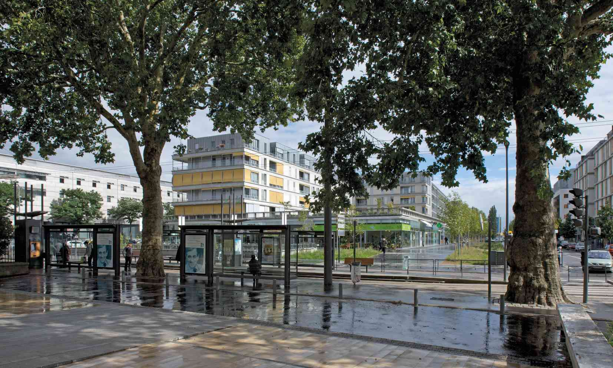

Survolez l'image et agrandissez/réduisez la vue à l'aide de la molette.
Budget: 13 485 000 € HT
Surface SHON: 11 505 m²
Date début: 2002
Date fin: 2009
Maîtrise d'ouvrage: Bouygues Immobilier
Co-traitant(s): bueau des paysages
Description:
Ce bâtiment, inscrit dans les schémas directeurs de la ZAC Stanislas-Meurthe, accueille plusieurs
types de programmes et de fonctions. L’ensemble des commerces avec les boutiques et l’unité
alimentaire de taille moyenne est desservi par un mail public reliant la promenade Émile-du-Châtelet
et le boulevard d’Austrasie. Le bâtiment tout entier tient compte de la spécificité du terrain et des
principes d’aménagement qui l’entourent.
Ainsi les façades du bâtiment sont mises à distance de
la rue par un muret périphérique et des douves plantées de bambous qu’enjambent les passerelles
d’accès aux immeubles. Le parking silo, à la fois public et résidentiel, compris entre les deux
immeubles d’habitations, permet un accès de plain-pied aux logements. Les parcs de stationnement
bénéficient de ventilation et de lumière naturelle. Le dernier niveau de l’immeuble, à ciel ouvert,
constitue un belvédère sur la ville. Les logements s’ouvrent sur un jardin suspendu, salon urbain
planté d’arbres de hautes tiges.
L’unité du bâtiment tient aussi à l’utilisation d’un vocabulaire de
matériaux commun à la structure et à la façade : le béton armé, net de décoffrage, de teinte gris
clair, pour la structure porteuse, des enduits à la chaux de teinte pierre claire, l’acier galvanisé
naturel pour les serrureries, l’aluminium anodisé naturel pour les menuiseries et volets le zinc
naturel pour les toitures des logements.
{kind=link}
{kind=link}
{kind=link}
{kind=link}